分解
分解本章主要讨论超定方程组与不定方程组的最小二乘解,即的最小化,其中 .解此问题的可靠方法是通过正交变换将
.解此问题的可靠方法是通过正交变换将 约化为各种典型形式.我们在以下的讨论中主要考虑实矩阵.但容易看出,复矩阵的
约化为各种典型形式.我们在以下的讨论中主要考虑实矩阵.但容易看出,复矩阵的 分解完全可以仿照实矩阵进行.
分解完全可以仿照实矩阵进行.
 Householder反射
Householder反射
通过正交变换将矩阵约化为典型形式 (如Hessenberg形式)的典型方法是通过一系列正交变换,逐个地将矩阵列向量的某些指定分量化为.下面我们就先讨论这一过程的两种实现:Householder反射与Jacobi-Givens旋转.
Householder反射的几何意义是取向量 关于指定超平面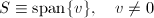的反射.为向量关于平面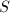的法线的投影,从而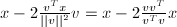为关于该平面的投影.因此,设是非零向量,称形如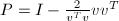的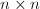矩阵为Householder反射.如果用去乘向量,则得到是关于超平面的反射.
关于指定超平面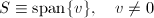的反射.为向量关于平面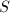的法线的投影,从而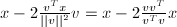为关于该平面的投影.因此,设是非零向量,称形如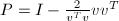的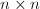矩阵为Householder反射.如果用去乘向量,则得到是关于超平面的反射.
利用Householder反射可将一个向量的某些选定分量变为.设给定 ,欲使沿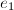的方向.由几何直观容易知道
有一些细节需要注意:
,欲使沿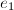的方向.由几何直观容易知道
有一些细节需要注意:
- 由于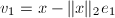使得是的正倍数,故常常采用.但当接近的一个正倍数时,则会出现严重的相消.由
 在0$" class="latex-inline" style="vertical-align: -2px" width="47" height="13">的情况下则可避免相消.
在0$" class="latex-inline" style="vertical-align: -2px" width="47" height="13">的情况下则可避免相消. - 实际中常常将Householder向量规范化使得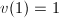,这就允许将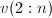存储到已化零的位置,即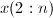,而无需增加额外的存储开销.在这种情况下,我们将称为Householder向量的基本部分.
- 在进行Householder矩阵与向量的乘法运算时,我们并不直接采用矩阵-向量乘法,而是采用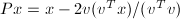的运算顺序,可以显著减少运算量.
- 在基于Householder反射的矩阵分解算法中,常用到形如,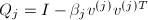的若干个Householder矩阵的乘积,其中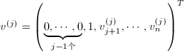.通常我们并不显式地求出,而是将其保持因子形式,逐个作用到给定矩阵上去,在不需显式求出变换矩阵时可显著减少运算量.
- 若要将显式求出(或部分求出),则采用向后累积的形式,即先将赋值为单位矩阵,依次计算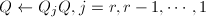.这样可以减少运算所需的flop数.
Jacobi-Givens旋转
Jacobi-Givens旋转是指在特定二维坐标坐标平面内进行的旋转,其一般形式为
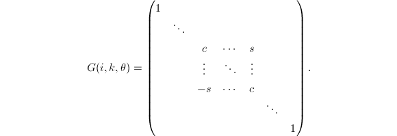其中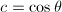,, 和
和 等分别位于第
等分别位于第 行和第
行和第 行.
行.
用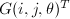左乘即产生在坐标平面的 角的旋转.运用Givens旋转可有选择地消去一些矩阵元素.
角的旋转.运用Givens旋转可有选择地消去一些矩阵元素.
若 ,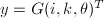,则
若令
则可将
,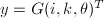,则
若令
则可将 化为.通过合理运算顺序安排,可以避免计算中溢出发生.本算法共需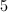个flop和
化为.通过合理运算顺序安排,可以避免计算中溢出发生.本算法共需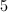个flop和 次平方根运算.
次平方根运算.
在应用Givens旋转时,同样有一些细节问题需要特别注意:
- 当用Givens矩阵进行左乘或右乘修正时,应注意到它只影响矩阵的两行或两列.
- 同Householder变换类似,多个Givens矩阵的乘积通常并不显式地出现.
- 可将每一个旋转变换对应于一个浮点数,从而将其存储在向量已消元的位置,通常在正弦较小时存储,余弦较小时存储.可以由重新构造Givens矩阵.
除标准Givens变换外,还有所谓快速Givens变换,又称"免平方根 (square root-free) Givens变换".将在应用时介绍.
分解
一个 矩阵的分解为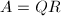,其中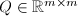是正交矩阵,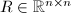是上三角矩阵.本节将讨论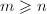且为列满秩情形下的分解,主要工具为Householder变换,Givens变换以及Gram-Schmidt正交化方法.
矩阵的分解为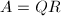,其中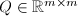是正交矩阵,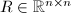是上三角矩阵.本节将讨论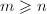且为列满秩情形下的分解,主要工具为Householder变换,Givens变换以及Gram-Schmidt正交化方法.
Householder 分解
利用Householder变换进行分解是直截了当的,可给出算法描述如下:
 步,我们计算Householder矩阵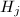满足:左乘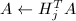使部分化为.如果,则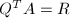是上三角阵.特别地,的上三角部分被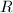的上三角部分覆盖,第个Householder向量的基本部分存储于,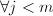.
步,我们计算Householder矩阵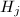满足:左乘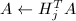使部分化为.如果,则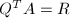是上三角阵.特别地,的上三角部分被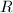的上三角部分覆盖,第个Householder向量的基本部分存储于,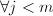.
Givens 方法
选择一个合适的消去的顺序,Givens 分解也是简单有效的.如通过自左而右逐列考察,每一列中通过自下而上地进行Givens变换对引入零元,共需个flop即可将化为上三角形式.Givens变换矩阵累积起来即得到正交变换矩阵.我们也可以将 用单个浮点数表示,从而将其存储在已化零的
用单个浮点数表示,从而将其存储在已化零的 中.
中.
下面讨论快速Givens 方法.
快速Givens方法思想就是当是一系列Givens旋转的乘积时巧妙地表达它.具体地说, 用一个矩阵对来表示,其中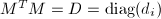且0,\forall{i}$" class="latex-inline" style="vertical-align: -4px" width="66" height="16">.矩阵,
用一个矩阵对来表示,其中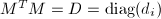且0,\forall{i}$" class="latex-inline" style="vertical-align: -4px" width="66" height="16">.矩阵, 和
和 通过公式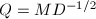联系起来.易知是正交的.若
通过公式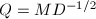联系起来.易知是正交的.若 使是对角阵,则取满足.从而由快速Givens的表示形式做变换即可得到.
使是对角阵,则取满足.从而由快速Givens的表示形式做变换即可得到.
以 维的情形来说明以上思想.令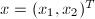,给定0)$" class="latex-inline" style="vertical-align: -5px" width="208" height="18">.定义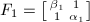,则
维的情形来说明以上思想.令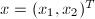,给定0)$" class="latex-inline" style="vertical-align: -5px" width="208" height="18">.定义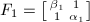,则
 若,取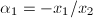,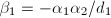,则
其中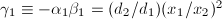.
若,取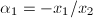,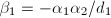,则
其中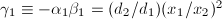.
类似地,如果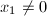,则可定义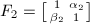,其中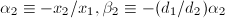.则 其中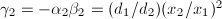.
这样,我们就完成了对该算法思想的描述.实际中选择变化类型使矩阵元素的"增长因子"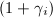以为界.
借助快速Givens变换,我们可以计算非奇异的和正的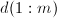使得为上三角阵,且 .则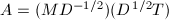是的分解.这种算法需要个flop,且不涉及平方根运算.
.则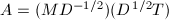是的分解.这种算法需要个flop,且不涉及平方根运算.
Givens方法对于稀疏矩阵问题,尤其是带状矩阵问题有特别的优势,例如对Hessenberg矩阵进行分解只需要个flop.
Gram-Schmidt方法
经典Gram-Schmidt方法(CGS)是我们熟.gif" alt="$M^TA=T$" class="latex-inline" style="vertical-align: 0px" width="75" height="14">涓轰